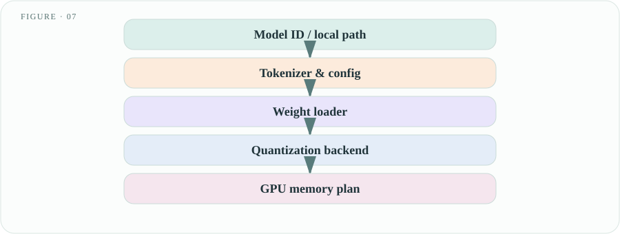

上一章咱们跑了 Hello World。这一章深入模型加载的各种细节——从哪里加载、支持什么格式、那些关键参数到底怎么调。说实话，我踩过的坑有一半来自参数配置不当。

7.1 模型来源
| 来源 | 格式 | 示例 |
|---|---|---|
| HuggingFace Hub | 直接写 model ID | meta-llama/Llama-3-8B |
| 本地路径 | 绝对路径或相对路径 | /models/my-llama-3 |
| ModelScope（中国镜像） | 设置环境变量后直接写 ID | VLLM_USE_MODELSCOPE=True |
| S3 / GCS / OSS | 通过 fsspec 协议 | s3://bucket/model-path/ |
国内用户注意：HuggingFace Hub 在国内访问可能很慢。设置 export HF_ENDPOINT=https://hf-mirror.com 使用镜像，或者 export VLLM_USE_MODELSCOPE=True 切换到 ModelScope。
7.2 关键显存参数
这些参数直接影响显存使用和性能——生产环境中也是最常调整的：
vllm serve meta-llama/Llama-3-8B \
--gpu-memory-utilization 0.95 \ # GPU 显存利用率上限
--max-model-len 8192 \ # 单个请求最大 token 数
--max-num-seqs 256 \ # 最大并发序列数
--max-num-batched-tokens 8192 # 每 batch 最大 token 数| 参数 | 含义 | 设太大 | 设太小 |
|---|---|---|---|
gpu-memory-utilization | GPU 显存使用比例上限 | OOM | 显存浪费，并发低 |
max-model-len | 单个序列最大 token 数 | 单个请求霸占太多 KV cache | 长请求被截断 |
max-num-seqs | 同时处理的序列数上限 | KV cache 不够，频繁抢占 | GPU 利用率低 |
7.3 量化模型加载
vLLM 支持多种量化格式，可以大幅减少显存使用：
| 量化方法 | 压缩比 | 精度损失 | 启动参数 |
|---|---|---|---|
| FP8 | 2× | 几乎无损 | --quantization fp8 |
| AWQ | 3-4× | 微量 | --quantization awq |
| GPTQ | 3-4× | 微量 | --quantization gptq |
| BitsandBytes (8bit) | 2× | 小 | --quantization bitsandbytes --load-format bitsandbytes |
FP8 是否可用、是否有原生硬件加速以及精度影响，取决于 GPU 架构、量化格式、kernel backend 和模型权重；A100 与 H100 的硬件能力并不相同。
# 加载 FP8 量化模型（显存减半）
vllm serve neuralmagic/Meta-Llama-3-8B-FP8 --quantization fp8
# 加载 AWQ 量化模型
vllm serve TheBloke/Llama-3-8B-AWQ --quantization awq7.4 模型下载策略
vLLM 支持多种模型格式，可以通过 --load-format 控制：
| 格式 | 说明 | 使用场景 |
|---|---|---|
auto | 自动检测（默认） | 通用 |
safetensors | 安全的张量格式（推荐） | HuggingFace 标准格式 |
pt | PyTorch checkpoint | 旧版或自定义模型 |
npcache | vLLM 自有格式 | 快速重复启动 |
加速技巧：首次启动后，vLLM 会自动缓存转换后的模型权重。第二次启动同样的模型会快很多。缓存路径在 ~/.cache/vllm/。
7.5 HuggingFace Token 认证
访问 gated model（如 Llama、Mistral）需要 HuggingFace Token：
# 方法1：环境变量
export HF_TOKEN="hf_xxxxxxxxxxxx"
# 方法2：huggingface-cli login
huggingface-cli login
# 方法3：启动参数传入
vllm serve meta-llama/Llama-3-8B # 通过受保护的 HF_TOKEN 环境变量传入凭证7.6 遇到的坑与解法
坑1：OOM 但显存明明有余量
症状：torch.cuda.OutOfMemoryError，但 nvidia-smi 显示还有 5GB 空闲。原因：CUDA 的内存碎片或 driver context 占用了预留空间。解法：降低 --gpu-memory-utilization 到 0.85，或者设置 VLLM_ATTENTION_BACKEND=FLASH_ATTN。
坑2：Docker 中 NCCL 通信失败
症状：NCCL WARN: Failed to initialize shm。原因：Docker 默认限制共享内存为 64MB，NCCL 不够用。解法：--ipc=host 或 --shm-size=8g。
坑3：模型下载超时
症状：卡在 Downloading model...，然后 timeout。解法：先手动下载到本地路径，再用本地路径加载；或用国内镜像。
好了，第一部分"基础篇"到这里结束。从下一章开始，咱们进入"核心机制篇"——深入 vLLM 的内部，理解 KV Cache 管理、Prefix Caching、调度器等关键子系统。
参考资料与证据
- vLLM CLI 指南serve command
- vLLM 支持模型列表Supported models